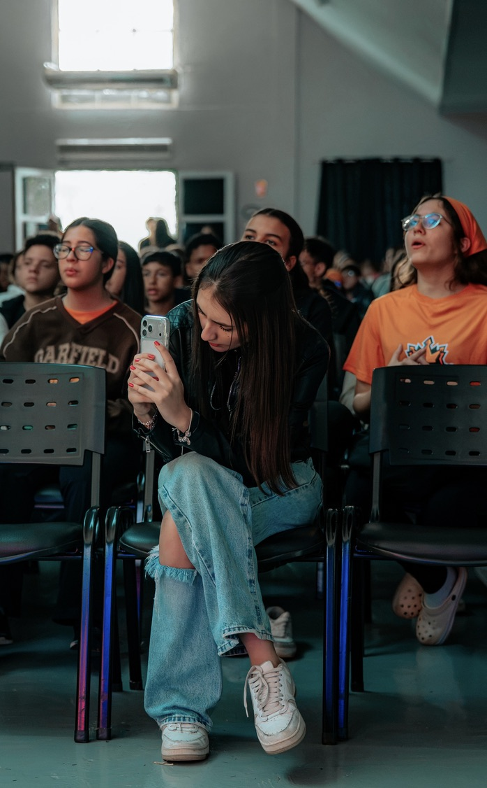
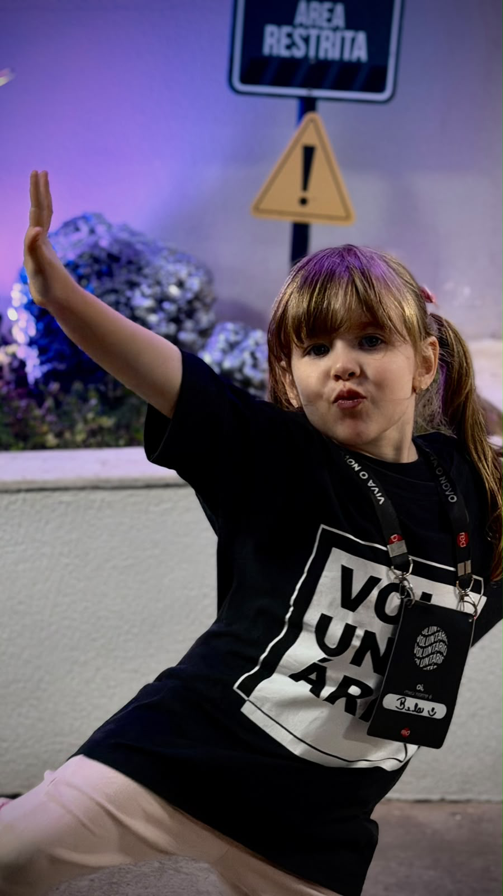

Estudante de Desenvolvimento de Software na FATEC Indaiatuba, conectando lógica, tecnologia e propósito.
Meu nome é Sara Rossi Bacharollo. Atualmente curso Desenvolvimento de Software na FATEC Indaiatuba, onde desenvolvo minhas competências em programação e resolução de problemas técnicos.
Além da formação acadêmica, possuo capacitação complementar em Fundamentos de Redes, Cibersegurança (Cisco Networking Academy) e Excel. Tenho interesse em constante aprendizado no ecossistema de tecnologia, aliando organização analítica à criação de soluções modernas.
Dedicação, criatividade e acolhimento no serviço à próxima geração.
Atuo como voluntária na Igreja Red no ministério infantil Red Kids. Nesse espaço, colaboro ativamente com a produção de mídias, gravações dos episódios da nossa série oficial e na cobertura em tempo real das atividades de domingo.
Combino minha paixão por comunicação e tecnologia para registrar e transmitir conteúdos que gerem conexão, registrando bastidores e momentos marcantes com excelência e sensibilidade visual.

Orientação, desenvolvimento de liderança e criação de conteúdo.
Além da atuação no ministério infantil, lidero e acompanho grupos de adolescentes na igreja. Minha atuação envolve o direcionamento jovem, escuta ativa e a coordenação de gravações e mídias voltadas para essa faixa etária.
Essa vivência me ensinou a trabalhar em equipe com empatia, gerenciar responsabilidades sob prazos dinâmicos e exercer uma liderança participativa que incentiva o protagonismo de cada jovem.
Construindo uma trajetória focada em evolução contínua e impacto tecnológico.
Busco ingressar no mercado como Estagiária em Desenvolvimento de Software (com foco em desenvolvimento front-end e tecnologias web), onde possa aplicar na prática meus conhecimentos acadêmicos e projetos de estudo.
Almejo integrar equipes colaborativas que valorizem o aprendizado contínuo. Quero contribuir com minha capacidade de organização, visão prática e proatividade na otimização de processos e construção de interfaces.